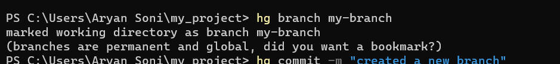

Version control systems (VCS) are essential tools for software development, enabling tracking of changes, collaboration, and efficient management of code. This document provides an insightful comparison of Mercurial (Hg) 🐍 and Subversion (SVN) 🏗️, detailing their workflows, commands, and a comparison to help you choose the best for your project.
Mercurial is a distributed version control system (DVCS) that is fast, scalable, and easy to use. Unlike SVN, which depends on a central repository, Mercurial allows developers to maintain a full copy of the repository locally.
📸
Subversion is a centralized version control system (CVCS) where all changes are stored in a central repository. Developers check out a working copy, make changes, and commit them back to the server.
📸 
hg init my_project
cd my_project
echo "Hello, Mercurial" > file.txt
hg add file.txt
hg commit -m "Added file.txt"
📸 
hg branch my-branch
hg commit -m "created a new branch"
hg merge my-branch
📸 
hg status
hg log
📸 
svnadmin create D:\svn
svn checkout file:///D:/svn D:\svn_working_copy
cd D:\svn_working_copy
📸

echo "Hello, SVN" > file.txt
svn add file.txt
svn commit -m "Added file.txt"
foreach ($dir in @("trunk", "branches", "tags")) { mkdir $dir }
svn commit -m "Created SVN directory structure"
📸 
svn copy file:///D:/svn/trunk file:///D:/svn/branches/my-branch -m "Creating my-branch"
svn merge file:///D:/svn/branches/my-branch
svn commit -m "Merged my-branch into trunk"
📸 
| Feature | 🐍 Mercurial (Hg) | 🏗️ Subversion (SVN) |
|---|---|---|
| Type | Distributed (DVCS) | Centralized (CVCS) |
| Branching | Easy and lightweight | More complex |
| Speed | Faster for local operations | Slower due to network dependency |
| Offline Work | Fully functional | Limited without server access |
| Merge Handling | Automatic and efficient | Manual conflict resolution required |
| Setup Complexity | Simple | More setup required |
📌 Mercurial is ideal for distributed teams, while SVN works best for controlled environments.
Both Mercurial and SVN have their strengths and weaknesses, making them suited for different types of projects. If you need a fast, distributed workflow, go for Mercurial. If you require strict, centralized control, SVN is the better option.
✅ Upload this repository to GitHub.
✅ Add screenshots inside the screenshots/ folder.
✅ Experiment with advanced commands like hg rollback and svn revert.
✍️ Author: Aryan Soni
🔥 Happy Version Controlling! 🚀